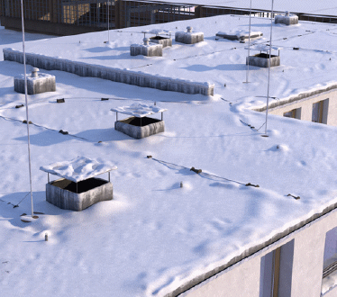
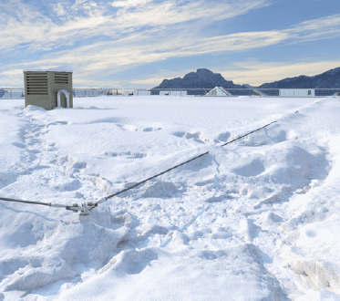

Für die Festlegung einer zielführenden Vorgehensweise sind insbesondere die bei der Schneeräumung zu erwartenden Tätigkeiten in Verbindung mit den verwendeten Arbeitsmitteln und unter Berücksichtigung der spezifischen Arbeitssituation zu bewerten.
Folgende Parameter sind besonders zu berücksichtigen:
Darüber hinaus sind allgemeine Gefährdungen wie z. B. Stolpergefahren durch Anschlag- und Blitzschutzeinrichtungen (Abbildungen 2 und 3) sowie Aufbauten, Rutschgefahren auf Foliendächern, Stromschlag (z. B. durch Hausanschlussleitungen, durch Beschädigung an Photovoltaikanlagen) und ergonomische Aspekte einschließlich der Gefahr der Dehydration des Räumpersonals in das Räumkonzept mit einzubeziehen.
Bei der Planung von Neubauten ist es sinnvoll, den Aspekt der Schneeräumung unter Einbeziehung der Gebäudelogistik (z. B. Verkehrswege, Fluchtwege, Anlieferung, Parkplatz) zu betrachten.
Sicherungseinrichtungen auf der Dachfläche sind nach oder zusammen mit der Festlegung der Schneeräumungsabläufe zu planen. Dabei ist zu beachten, dass Geländer an einer möglichen Abwurfstelle und Anschlageinrichtungen die Schneeräumung erschweren können.

Abb. 2 Beispiel Stolpergefahr Blitzschutzanlage

Abb. 3 Beispiel Stolpergefahr Anschlageinrichtung